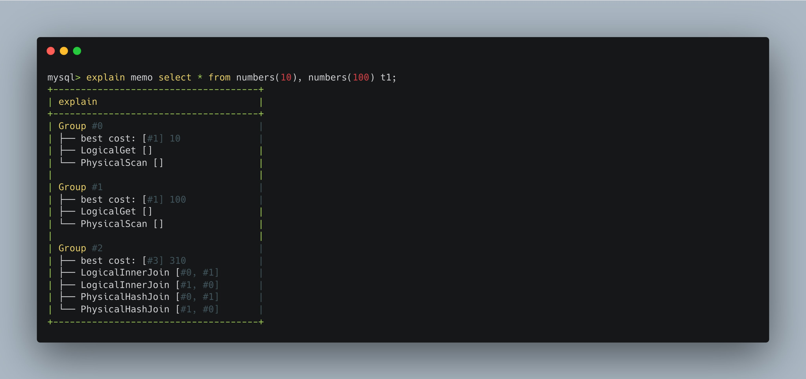

This week in Databend #63
Databend is a powerful cloud data warehouse. Built for elasticity and efficiency. Free and open. Also available in the cloud: https://app.databend.com .
What's Changed
Below is a list of some major changes that we don't want you to miss.
Exciting New Features ✨
sharing
- add shared layer to read data from sharing endpoint (#8044)
planner
- top-down optimization (#8080)
- convert outer join to inner join (#7967)
- convert mark join to semi join (#8064)
- support
EXPLAIN MEMOstatement (#8125)
storage
- parallel index pruning (#7893)
- oss backend support (#8066 & #8079)
- try to get segments parallel (#8076)
- table column statistics api (#8152)
new expression
- migrate agg function: stddev, window_funnel to func-v2 (#8034)
- migrate variant func to func-v2 (#7972)
- numeric/string can cast to boolean when it's in filter (#8051)
- support
DateandIntervalin new expression framework (#8058) - add take_chunks kernel (#8137)
Code Refactor 🎉
cache
- remove not used disk cache (#8166)
meta
- move
MetaStorageErrorto a standalone crate (#8161)
query
- remove precision in timestamp type (#8154)
deps
- move several common dependency declarations to workspace
Cargo.toml(#8171)
Build/Testing/CI Infra Changes 🔌
ci
Thoughtful Bug Fix 🔧
build
- fix build failure on newer versions of protoc (#8047)
datavalues
only_nullfor nullable column should return false when column is empty (#8045)
parser
- fix version() (#8126)
pipelines
storage
- using table owned dal operator instead of get from query context (#8113)
- pruning not work as expected (#8131)
new expression
- properly repeat Scalar::Null to column (#8111)
News
Let's take a look at what's new at Datafuse Labs & Databend each week.
EXPLAIN MEMO
Databend supports EXPLAIN MEMO statement to visualize memo structure now.
Syntax
EXPLAIN MEMO <query_statement>

Learn More
Tips on PRESIGN
Since #6529 was merged, Databend supports PRESIGN to generate the pre-signed URL for a staged file.
PRESIGN [{ DOWNLOAD | UPLOAD }] @<stage_name>/.../<file_name> [ EXPIRE = <expire_in_seconds> ]
[{ DOWNLOAD | UPLOAD }] specifies that the pre-signed URL is used for download or upload. So once you have the corresponding pre-signed URL, you can use curl to download or upload the file.
# download
curl '<pre-signed-url>' -o <file_name>
# upload
curl -F 'upload=@<file_path>' -XPUT '<pre-signed-url>'
Learn More
Remove Precision in Timestamp Type
Timestamp datatype now keep the precision which can be used to output the DateTime with a custom style.
The storage stores the same value for now() which represents instants as the number of microseconds (µs) since 1970-01-01 00:00:00+00. The precision is only for output style, so it's useless to keep it in datatype, we can use other functions like: to_yyyy_mm_dd to handle the style.
Learn More
Changlogs
You can check the changelogs of Databend nightly to learn about our latest developments.
- v0.8.61-nightly
- v0.8.62-nightly
- v0.8.63-nightly
- v0.8.64-nightly
- v0.8.65-nightly
- v0.8.66-nightly
- v0.8.67-nightly
- v0.8.68-nightly
- v0.8.69-nightly
- v0.8.70-nightly
- v0.8.71-nightly
Contributors
Thanks a lot to the contributors for their excellent work this week.
 |  |  |  |  |  |
|---|---|---|---|---|---|
| andylokandy | ariesdevil | b41sh | BohuTANG | ClSlaid | dantengsky |
 |  |  | ![mergify[bot]](https://avatars.githubusercontent.com/in/10562?v=4&s=117) |  |  |
|---|---|---|---|---|---|
| drmingdrmer | flaneur2020 | leiysky | mergify[bot] | PsiACE | rdettai |
 |  |  |  |  |  |
|---|---|---|---|---|---|
| RinChanNOWWW | sandflee | soyeric128 | sundy-li | TCeason | Xuanwo |
 |  |  | |||
|---|---|---|---|---|---|
| xudong963 | youngsofun | zhang2014 |
Meet Us
Please join the DatafuseLabs Community if you are interested in Databend.
We are looking forward to seeing you try our code. We have a strong team behind you to ensure a smooth experience in trying our code for your projects. If you are a hacker passionate about database internals, feel free to play with our code.
You can submit issues for any problems you find. We also highly appreciate any of your pull requests.
- Databend Website
- Weekly (A weekly newsletter about Databend)
- GitHub Discussions (Feature/Bug reports, Contributions)
- Twitter (Get the news fast)
- Slack Channel (For live discussion with the Community)
- I'm feeling lucky (Pick up a good first issue now!)